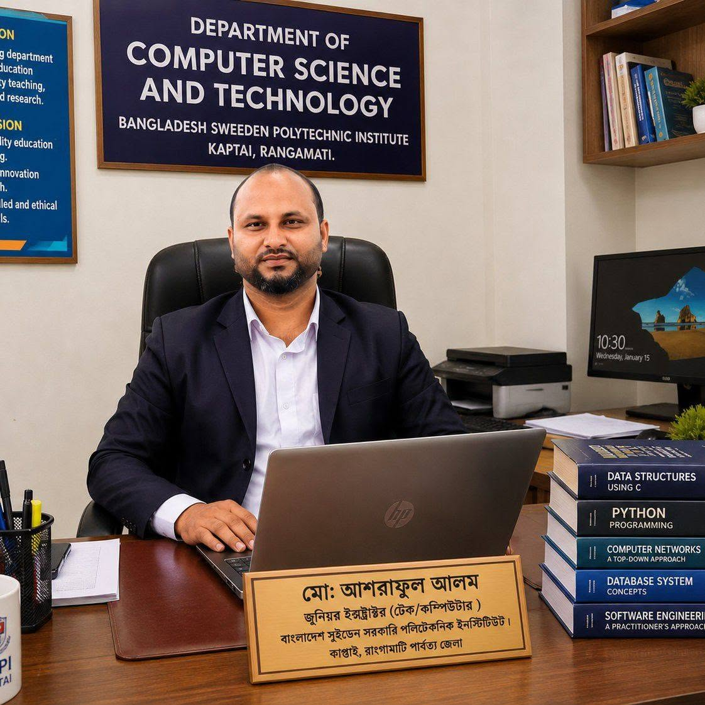
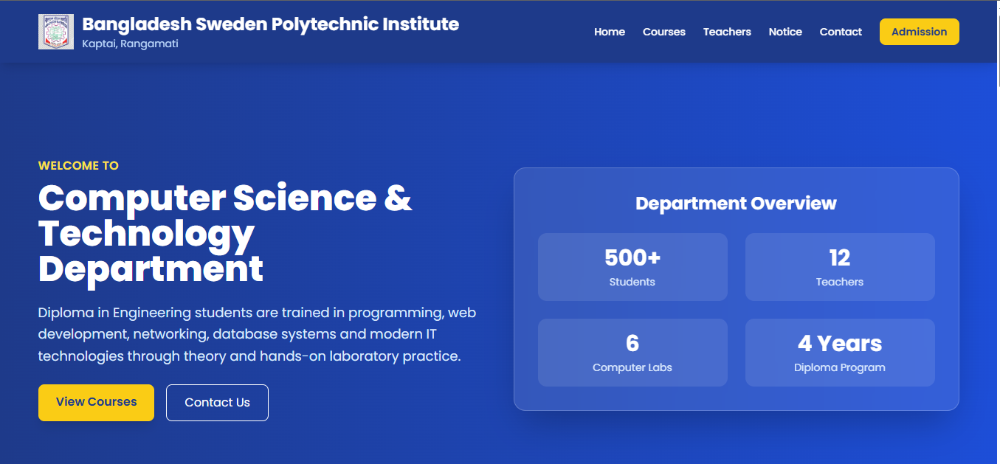

Government Polytechnic Instructor
Computer Technology Instructor at Bangladesh Sweden Polytechnic Institute Passionate about Web Development, Python Programming, Graphics Design, Cybersecurity and Technical Education.

About Me
From a passionate technology student to a government polytechnic instructor, my journey has been driven by teaching, continuous learning and practical IT training.
I am Md. Ashraful Alam, a Junior Instructor (Computer) at Bangladesh Sweden Polytechnic Institute, Kaptai, Rangamati.
My professional career began with a strong interest in web technologies and programming. Between 2015 and 2021, I worked as a part-time instructor in Sylhet and established an IT training center where I conducted courses on Web Design & Development.
Later I joined government service and have been serving as a polytechnic instructor for more than 2 years. I regularly teach theory and laboratory courses including Web Development, Python Programming, C Programming, Graphics Design and IT-related subjects.
I believe in learning by doing. My goal is to build a strong online educational platform, create technical content, and help students develop practical skills for higher studies, freelancing and industry careers.
2015 – 2021
Conducted Web Design & Development training and managed an IT training center in Sylhet.
2024 – Present
Teaching programming, web technologies, graphics design and practical laboratory courses at BSPI.
Future Goal
Build a personal learning platform with courses, tutorials, technical blogs and student resources.
Skills & Certifications
Practical skills developed through teaching, training and continuous learning.
BNQF Level-4
BNQF Level-3
BNQF Level-3
BNQF Level-3
Portfolio
Selected projects demonstrating my web design, frontend development and educational technology experience.

A modern responsive education website template designed for polytechnic institutes and computer technology departments. Includes hero section, course cards, faculty profiles, notice board, contact form and professional footer.